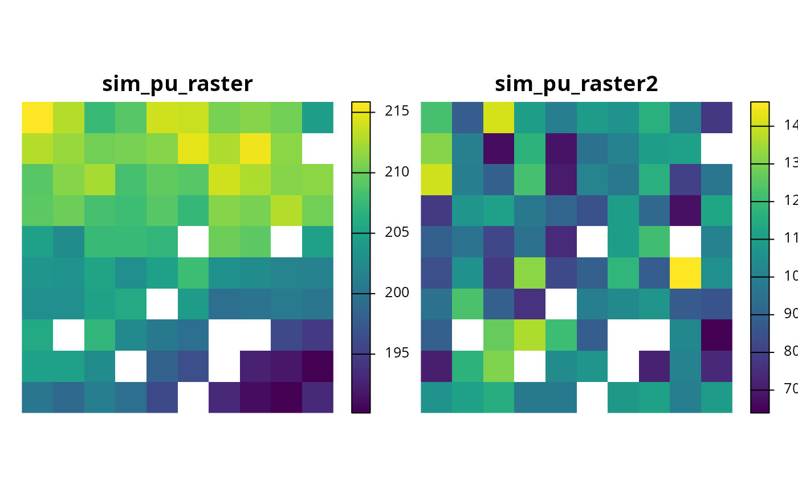
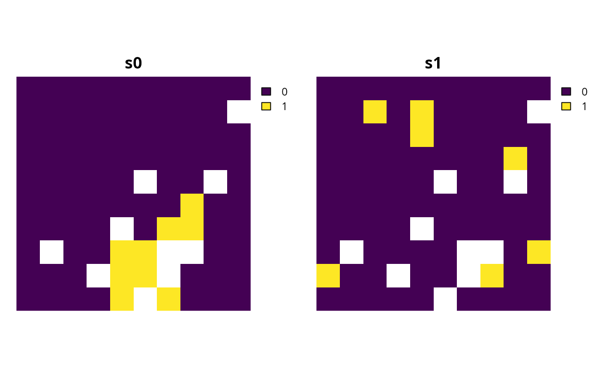
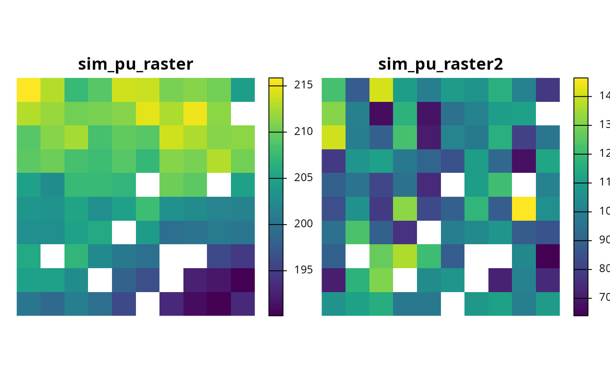
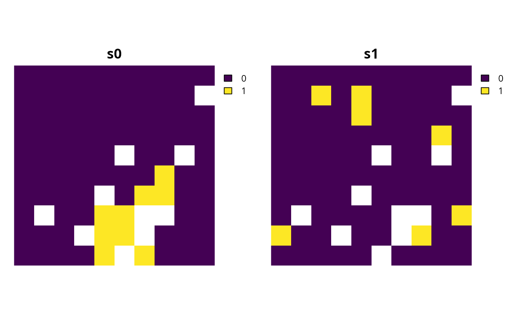

Add constraints to a conservation planning problem to ensure that all selected planning units meet certain criteria.
Usage
# S4 method for ConservationProblem,ANY,ANY,character
add_linear_constraints(x, threshold, sense, data)
# S4 method for ConservationProblem,ANY,ANY,numeric
add_linear_constraints(x, threshold, sense, data)
# S4 method for ConservationProblem,ANY,ANY,matrix
add_linear_constraints(x, threshold, sense, data)
# S4 method for ConservationProblem,ANY,ANY,Matrix
add_linear_constraints(x, threshold, sense, data)
# S4 method for ConservationProblem,ANY,ANY,Raster
add_linear_constraints(x, threshold, sense, data)
# S4 method for ConservationProblem,ANY,ANY,SpatRaster
add_linear_constraints(x, threshold, sense, data)
# S4 method for ConservationProblem,ANY,ANY,dgCMatrix
add_linear_constraints(x, threshold, sense, data)Arguments
- x
problem()object.- threshold
numericvalue. This threshold value is also known as a "right-hand-side" value per integer programming terminology.- sense
charactersense for the constraint. Available options include">=","<=", or"="values.- data
character,numeric,terra::rast(),matrix, orMatrixobject containing the constraint values. These constraint values are also known as constraint coefficients per integer programming terminology. See the Data format section for more information.
Value
An updated problem() object with the constraints added to it.
Details
This function adds general purpose constraints that can be used to
ensure that solutions meet certain criteria
(see Examples section below for details).
For example, these constraints can be used to add multiple budgets.
They can also be used to ensure that the total number of planning units
allocated to a certain administrative area (e.g., country) does not exceed
a certain threshold (e.g., 30% of its total area). Furthermore,
they can also be used to ensure that features have a minimal level
of representation (e.g., 30%) when using an objective
function that aims to enhance feature representation given a budget
(e.g., add_min_shortfall_objective()).
Mathematical formulation
The linear constraints are implemented using the following
equation.
Let \(I\) denote the set of planning units
(indexed by \(i\)), \(Z\) the set of management zones (indexed by
\(z\)), and \(X_{iz}\) the decision variable for allocating
planning unit \(i\) to zone \(z\) (e.g., with binary
values indicating if each planning unit is allocated or not). Also, let
\(D_{iz}\) denote the constraint data associated with
planning units \(i \in I\) for zones \(z \in Z\)
(argument to data, if supplied as a matrix object),
\(\theta\) denote the constraint sense
(argument to sense, e.g., \(<=\)), and \(t\) denote the constraint
threshold (argument to threshold).
$$ \sum_{i}^{I} \sum_{z}^{Z} (D_{iz} \times X_{iz}) \space \theta \space t $$
Data format
The argument to data can be specified using the following formats.
dataascharactervectorcontaining column name(s) that contain penalty values for planning units. This format is only compatible if the planning units in the argument to
xare asf::sf()ordata.frameobject. The column(s) must havenumericvalues, and must not contain any missing (NA) values. For problems that contain a single zone, the argument todatamust contain a single column name. Otherwise, for problems that contain multiple zones, the argument todatamust contain a column name for each zone.dataas anumericvectorcontaining values for planning units. These values must not contain any missing (
NA) values. Note that this format is only available for planning units that contain a single zone.dataas amatrix/Matrixobjectcontaining
numericvalues that specify data for each planning unit. Each row corresponds to a planning unit, each column corresponds to a zone, and each cell indicates the data for penalizing a planning unit when it is allocated to a given zone.dataas aterra::rast()objectcontaining values for planning units. This format is only compatible if the planning units in the argument to
xaresf::sf(), orterra::rast()objects. If the planning unit data are asf::sf()object, then the values are calculated by overlaying the planning units with the argument todataand calculating the sum of the values associated with each planning unit. If the planning unit data are aterra::rast()object, then the values are calculated by extracting the cell values (note that the planning unit data and the argument todatamust have exactly the same dimensionality, extent, and missingness). For problems involving multiple zones, the argument todatamust contain a layer for each zone.
See also
See constraints for an overview of all functions for adding constraints.
Other constraints:
add_contiguity_constraints(),
add_feature_contiguity_constraints(),
add_locked_in_constraints(),
add_locked_out_constraints(),
add_mandatory_allocation_constraints(),
add_manual_bounded_constraints(),
add_manual_locked_constraints(),
add_neighbor_constraints()
Examples
# \dontrun{
# load data
sim_pu_raster <- get_sim_pu_raster()
sim_features <- get_sim_features()
# create a baseline problem with minimum shortfall objective
p0 <-
problem(sim_pu_raster, sim_features) %>%
add_min_shortfall_objective(1800) %>%
add_relative_targets(0.2) %>%
add_binary_decisions() %>%
add_default_solver(verbose = FALSE)
# solve problem
s0 <- solve(p0)
# plot solution
plot(s0, main = "solution", axes = FALSE)
 # now let's create some modified versions of this baseline problem by
# adding additional criteria using linear constraints
# first, let's create a modified version of p0 that contains
# an additional budget of 1600 based on a secondary cost dataset
# create a secondary cost dataset by simulating values
sim_pu_raster2 <- simulate_cost(sim_pu_raster)
# plot the primary cost dataset (sim_pu_raster) and
# the secondary cost dataset (sim_pu_raster2)
plot(
c(sim_pu_raster, sim_pu_raster2),
main = c("sim_pu_raster", "sim_pu_raster2"),
axes = FALSE
)

# create a modified version of p0 with linear constraints that
# specify that the planning units in the solution must not have
# values in sim_pu_raster2 that sum to a total greater than 500
p1 <-
p0 %>%
add_linear_constraints(
threshold = 500, sense = "<=", data = sim_pu_raster2
)
# solve problem
s1 <- solve(p1)
# plot solutions s1 and s2 to compare them
plot(c(s0, s1), main = c("s0", "s1"), axes = FALSE)

# second, let's create a modified version of p0 that contains
# additional constraints to ensure that each feature has
# at least 8% of its overall distribution represented by the solution
# to achieve this, we need to calculate the total amount of each feature
# within the planning units so we can, in turn, set the constraint thresholds
feat_abund <- feature_abundances(p0)$absolute_abundance
# create a modified version of p0 with additional constraints for each
# feature to specify that the planning units in the solution must
# secure at least 8% of the total abundance for each feature
p2 <- p0
for (i in seq_len(terra::nlyr(sim_features))) {
p2 <-
p2 %>%
add_linear_constraints(
threshold = feat_abund[i] * 0.08,
sense = ">=",
data = sim_features[[i]]
)
}
# overall, p2 could be described as an optimization problem
# that maximizes feature representation as much as possible
# towards securing 20% of the total amount of each feature,
# whilst ensuring that (i) the total cost of the solution does
# not exceed 1800 (per cost values in sim_pu_raster) and (ii)
# the solution secures at least 8% of the total amount of each feature
# (if 20% is not possible due to the budget)
# solve problem
s2 <- solve(p2)
# plot solutions s0 and s2 to compare them
plot(c(s0, s2), main = c("s1", "s2"), axes = FALSE)
# now let's create some modified versions of this baseline problem by
# adding additional criteria using linear constraints
# first, let's create a modified version of p0 that contains
# an additional budget of 1600 based on a secondary cost dataset
# create a secondary cost dataset by simulating values
sim_pu_raster2 <- simulate_cost(sim_pu_raster)
# plot the primary cost dataset (sim_pu_raster) and
# the secondary cost dataset (sim_pu_raster2)
plot(
c(sim_pu_raster, sim_pu_raster2),
main = c("sim_pu_raster", "sim_pu_raster2"),
axes = FALSE
)

# create a modified version of p0 with linear constraints that
# specify that the planning units in the solution must not have
# values in sim_pu_raster2 that sum to a total greater than 500
p1 <-
p0 %>%
add_linear_constraints(
threshold = 500, sense = "<=", data = sim_pu_raster2
)
# solve problem
s1 <- solve(p1)
# plot solutions s1 and s2 to compare them
plot(c(s0, s1), main = c("s0", "s1"), axes = FALSE)

# second, let's create a modified version of p0 that contains
# additional constraints to ensure that each feature has
# at least 8% of its overall distribution represented by the solution
# to achieve this, we need to calculate the total amount of each feature
# within the planning units so we can, in turn, set the constraint thresholds
feat_abund <- feature_abundances(p0)$absolute_abundance
# create a modified version of p0 with additional constraints for each
# feature to specify that the planning units in the solution must
# secure at least 8% of the total abundance for each feature
p2 <- p0
for (i in seq_len(terra::nlyr(sim_features))) {
p2 <-
p2 %>%
add_linear_constraints(
threshold = feat_abund[i] * 0.08,
sense = ">=",
data = sim_features[[i]]
)
}
# overall, p2 could be described as an optimization problem
# that maximizes feature representation as much as possible
# towards securing 20% of the total amount of each feature,
# whilst ensuring that (i) the total cost of the solution does
# not exceed 1800 (per cost values in sim_pu_raster) and (ii)
# the solution secures at least 8% of the total amount of each feature
# (if 20% is not possible due to the budget)
# solve problem
s2 <- solve(p2)
# plot solutions s0 and s2 to compare them
plot(c(s0, s2), main = c("s1", "s2"), axes = FALSE)
 # third, let's create a modified version of p0 that contains
# additional constraints to ensure that the solution equitably
# distributes conservation effort across different administrative areas
# (e.g., countries) within the study region
# to begin with, we will simulate a dataset describing the spatial extent of
# four different administrative areas across the study region
sim_admin <- sim_pu_raster
sim_admin <- terra::aggregate(sim_admin, fact = 5)
sim_admin <- terra::setValues(sim_admin, seq_len(terra::ncell(sim_admin)))
sim_admin <- terra::resample(sim_admin, sim_pu_raster, method = "near")
sim_admin <- terra::mask(sim_admin, sim_pu_raster)
# plot administrative areas layer,
# we can see that the administrative areas subdivide
# the study region into four quadrants, and the sim_admin object is a
# SpatRaster with integer values denoting ids for the administrative areas
plot(sim_admin, axes = FALSE)
# next we will convert the sim_admin SpatRaster object into a SpatRaster
# object (with a layer for each administrative area) indicating which
# planning units belong to each administrative area using binary
# (presence/absence) values
sim_admin2 <- binary_stack(sim_admin)
# plot binary stack of administrative areas
plot(sim_admin2, axes = FALSE)
# third, let's create a modified version of p0 that contains
# additional constraints to ensure that the solution equitably
# distributes conservation effort across different administrative areas
# (e.g., countries) within the study region
# to begin with, we will simulate a dataset describing the spatial extent of
# four different administrative areas across the study region
sim_admin <- sim_pu_raster
sim_admin <- terra::aggregate(sim_admin, fact = 5)
sim_admin <- terra::setValues(sim_admin, seq_len(terra::ncell(sim_admin)))
sim_admin <- terra::resample(sim_admin, sim_pu_raster, method = "near")
sim_admin <- terra::mask(sim_admin, sim_pu_raster)
# plot administrative areas layer,
# we can see that the administrative areas subdivide
# the study region into four quadrants, and the sim_admin object is a
# SpatRaster with integer values denoting ids for the administrative areas
plot(sim_admin, axes = FALSE)
# next we will convert the sim_admin SpatRaster object into a SpatRaster
# object (with a layer for each administrative area) indicating which
# planning units belong to each administrative area using binary
# (presence/absence) values
sim_admin2 <- binary_stack(sim_admin)
# plot binary stack of administrative areas
plot(sim_admin2, axes = FALSE)
 # we will now calculate the total amount of planning units associated
# with each administrative area, so that we can set the constraint threshold
# since we are using raster data, we won't bother explicitly
# accounting for the total area of each planning unit (because all
# planning units have the same area in raster formats) -- but if we were
# using vector data then we would need to account for the area of each unit
admin_total <- Matrix::rowSums(rij_matrix(sim_pu_raster, sim_admin2))
# create a modified version of p0 with additional constraints for each
# administrative area to specify that the planning units in the solution must
# not encompass more than 10% of the total extent of the administrative
# area
p3 <- p0
for (i in seq_len(terra::nlyr(sim_admin2))) {
p3 <-
p3 %>%
add_linear_constraints(
threshold = admin_total[i] * 0.1,
sense = "<=",
data = sim_admin2[[i]]
)
}
# solve problem
s3 <- solve(p3)
# plot solutions s0 and s3 to compare them
plot(c(s0, s3), main = c("s0", "s3"), axes = FALSE)
# we will now calculate the total amount of planning units associated
# with each administrative area, so that we can set the constraint threshold
# since we are using raster data, we won't bother explicitly
# accounting for the total area of each planning unit (because all
# planning units have the same area in raster formats) -- but if we were
# using vector data then we would need to account for the area of each unit
admin_total <- Matrix::rowSums(rij_matrix(sim_pu_raster, sim_admin2))
# create a modified version of p0 with additional constraints for each
# administrative area to specify that the planning units in the solution must
# not encompass more than 10% of the total extent of the administrative
# area
p3 <- p0
for (i in seq_len(terra::nlyr(sim_admin2))) {
p3 <-
p3 %>%
add_linear_constraints(
threshold = admin_total[i] * 0.1,
sense = "<=",
data = sim_admin2[[i]]
)
}
# solve problem
s3 <- solve(p3)
# plot solutions s0 and s3 to compare them
plot(c(s0, s3), main = c("s0", "s3"), axes = FALSE)
 # }
# }